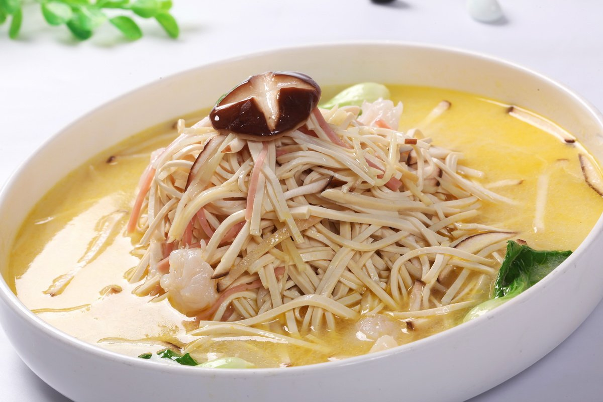

DaZhuGansi

Description
DaZhuGanSi (大煮干丝) is a classic Huaiyang dish featuring finely shredded tofu simmered in a rich, flavorful broth made with chicken, ham, and shrimp. This delicately crafted dish emphasizes precision and harmony, offering a silky texture and a light, savory taste.
Ingredients
- Firm tofu - 200-300g
- Cooked Chicken Breast - 50-100g (shredded)
- Cooked Ham - 50-100g (thin julienne strips)
- Cooked Shrimp - 50-100g (shelled and deveined)
- Shiitake Mushrooms - 2-3 (soaked, sliced thinly)
Steps
- Cut the tofu into thin slices
- Cut ham, chicken and mushrooms into thin slices
- Boil the water, and then put in the tofu until the water boils again
- Put the tofu through cold water to detach its original bad tastes
- Boil the chicken brooth and shrimp, after it boils put in the ham, mushroom, chicken strips, and tofu, cook for around 10 minutes
- Enjoy!